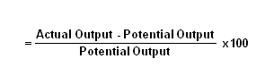

A metric used to measure the rate at which potential output levels are being met or used. Displayed as a percentage, capacity utilization levels give insight into the overall slack that is in the economy or a firm at a given point in time. If a company is running at a 70% capacity utilization rate, it has room to increase production up to a 100% utilization rate without incurring the expensive costs of building a new plant or facility.
Also known as "operating rate".
Graphically:
Capacity utilization rates can also be used to determine the level at which unit costs will rise. For instance, let's say that Company XYZ currently produces 10,000 widgets at a cost of $0.50 per unit. If it is determined that it can produce up to 15,000 widgets without costs rising above $0.50 per unit, the company is said to be running at a capacity utilization rate of 66% (10,000/15,000).
This is best applied to companies that produce physical goods rather than services, as the capacity measurements are much easier to quantify.
{kind=link}